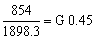
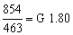

4.3.1 Capital investment
4.3.2 Operation and maintenance costs
4.3.3 Fuel costs
4.3.4 Total operating costs
4.3.5 Costs for electricity generation for family homes of sawmill personnel
4.3.6 Comparison with other alternatives for the electricity supply
The initial investment, shown in Table 4.3, was G 2131700 equivalent to US$ 16918 or 423 US$/kW. Note that the engine and generator were used and renovated.
An extension of the power line of 150 m to family homes is also included.
The person responsible for operation and maintenance of the gas producer equipment receives a monthly salary of G 70000. His basic pay is G 60000 and he receives an additional G 10000 to watch and stop the machine at night while electricity is supplied to family homes until 22.00 hours. Taking 25 work-days a month as the base, the daily wage is G 2800.
Net operating and- maintenance time on the gas producer and electric generator engine group corresponds to a half day's work of the operator, the other half being spent on maintenance tasks elsewhere in the mill. Therefore, only 50% of the mechanic's salary, or G 1400 per day, is allocated to the gas producer and electric generator group.
Cost of lubricants is about G 0.84/kWh or 0.0067 US$/kWh.
Spare parts for the engine and gasifier system have an average cost of G 174424 annually or 13 percent of the basic investment cost of the equipment (G 1352100).
Note = 1 US$ = 126G(1982)
Table 4.3 Capital Investment for the electricity generation unit at the Sapire mill
|
|
|
US$/kW |
|
Land (100 m² at 100 |
10000 |
2 |
|
Civil Engineering Works |
|
|
|
A 50 m² ceiling with iron columns, No. 26 sheet-zinc roof and cement floor 15 cm thick reinforced with 4.2 mm iron bars at |
200000 |
40 |
|
42 m² brick wall 0.30 m thick at |
54000 |
11 |
|
Electric generator and gasifier at |
80000 |
16 |
|
Electric Installations |
|
|
|
Electric installations and panel. Feeding outlets and 150 m extension line to family homes. |
140000 |
28 |
|
Machinery and Equipment |
|
|
|
90 HP Deutz engine and 40 kW A.E.G. electric generator |
560000 |
111 |
|
Wood gasifier with accessories (gas cooler, filter, piping, etc.) |
792100 |
157 |
|
Transport and Insurance Costs |
45000 |
9 |
|
Assembly and Testing Costs |
250000 |
49 |
|
Total Investment |
2131700 |
423 |
Residues at this sawmill have no market and so no commercial value, and no cost is applied to the raw material as such.
Preparation and handling of the fuel for the gasifier do, however, incur a certain cost. At the Sapire sawmill, the cost is composed as follows:
|
Number of employees |
Hourly wage rate per employee |
Total work hours per day |
Daily cost of labour to provide fuel |
|
3 |
|
3 |
|
|
i.e. sawing machine, electricity, etc. |
| ||
|
Total cost of fuel preparation handling wood and loading gas producer/day. |
| ||
|
|
| ||
COSTS PER DAY
|
Average wood consumption |
1898 kg |
|
Total wood handling and loading costs |
|
|
Electric energy produced kWh |
463 |
COSTS OF CUT WOOD PER KG - 
COST OF CUT WOOD PER kWh - 
Table 4.4 shows the total monthly and annual operating costs. The marginal cost for electricity generation is 8.17 G/kWh or 0.064 US$/kWh.
Table 4.4 Summary of Operation and Maintenance Costs on the Gas Producer and Electric Generator Engine Group
|
Cost Item |
Monthly Costs |
Annual Costs |
|
|
|
|
|
Operating Labour |
||
|
1 machine operator |
35000 |
420000 |
|
Social contributions and benefits |
|
16800 |
|
|
Annual total |
588000 |
|
Fuels |
||
|
Fuel wood, 569490 kg at 0.45 |
|
|
|
Annual fuel cost |
|
256200 |
|
Lubricants |
||
|
|
|
|
|
Annual cost of lubricants |
|
116676 |
|
Engine, Generator and Wood Gasifier Spare Parts. |
||
|
Annual cost of spare parts |
|
174424 |
|
|
|
1135300 |
|
Annual electricity production kWh |
|
138900 |
|
Marginal generation cost |
|
8.17 |
The annual consumption of electricity in the five homes of sawmill personnel, supplied with electricity free of charge is 4500 kWh. The annual cost for this, estimated from the marginal cost of electricity generation given above, is G 36765 or US$ 292.
Table 4.5 shows a comparison between the fuel costs for use of wood residues and gas oil for electricity generation at the Sapire sawmill.
The annual saving on fuel costs is G 1910640 or US$ 15164. Deducting the cost of labour, lubricants and spares shown in Table 4.4 (and taking no account of such costs for the diesel plant) the total annual saving with the wood gas power plant is G 1031540 or US$ 8186 as compared with the cost of diesel fuel alone.
Comparing this with the capital investment (see Table 4.2) of G 2131700 shows that the pay-back time is less than 2.5 years for an interest rate of 10%.
After more than four years of operation it is clear that the utilization of a wood gas power plant is a very profitable solution to the energy supply problem of this isolated sawmill.
Table 4.5 Comparison of Fuel Costs for Wood Gas Power Plant and Diesel Power Plant
|
Fuel consumption and fuel costs: | ||
|
Wood consumption |
kg/kWh |
4.1 |
|
Wood cost |
|
0.45 |
|
Gas oil consumption |
l/kWh |
0.26 |
|
Gas oil price |
|
60.0 |
|
Engine Work-time |
kWh Production |
Gas Oil Consumption |
Cost of Gas Oil |
Fuel Wood Consumption |
Cost of Fuel Wood |
Net Savings Using Fuel Wood |
|
(l) |
|
(kg) |
( |
( |
||
|
1 day (14 h) |
461 |
120 |
7223 |
1900 |
854 |
6369 |
|
1 month (25 days) |
11575 |
3009 |
180570 |
47460 |
21350 |
159220 |
|
1 year (12 mths) |
138900 |
36114 |
2166840 |
569500 |
256200 |
1910640 |